Breast Cancer Risks, Treatment & Outcome Modeling
Description Logic & Bayesian Networks
Piotr Mankowski & Pascal Brandt
Rationale
Breast Cancer Overview
Bayesian Networks
- Model the world using graph theory and probability theory
- Represented by Directed Acyclic Graphs (DAGs)
- Nodes "explained" by neighbors
- Efficient algorithms for learning and inference
Breast Cancer Data
UCI Machine Learning Repository
https://archive.ics.uci.edu/ml/datasets.html
Breast Cancer Surveilance Consortium
http://www.bcsc-research.org/data/index.html
https://archive.ics.uci.edu/ml/datasets.html
- University of Wisconsin Hospitals Datasets
- Institute of Oncology Ljubljana Dataset
Breast Cancer Surveilance Consortium
http://www.bcsc-research.org/data/index.html
- Data from > 2 million screening mammograms
Step #1: Learn The Structure
Step #1: Learn The Structure
BCSC Risk Dataset
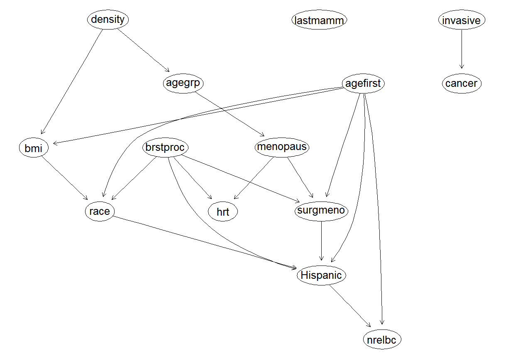Step #1: Learn The Structure
BCSC Risk Factor Dataset
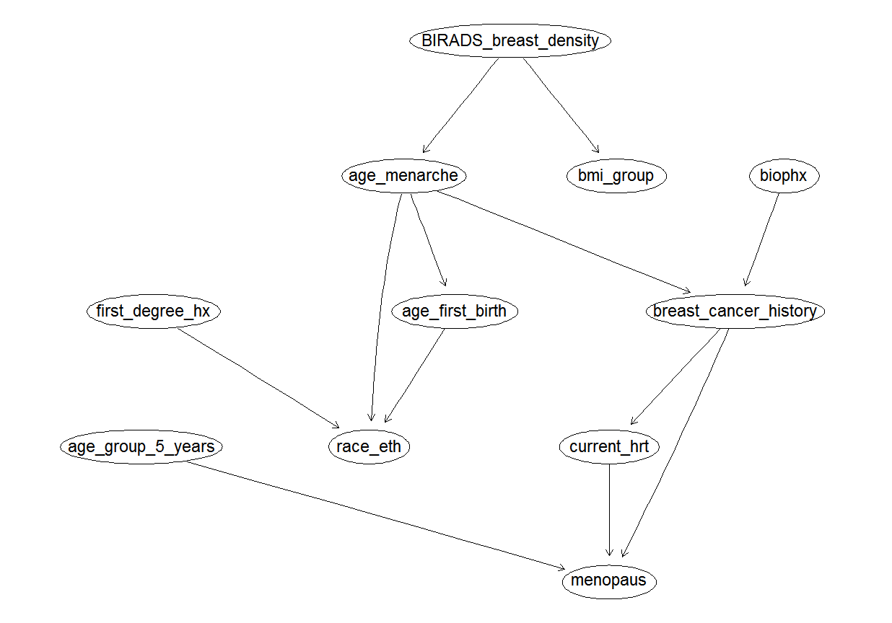Step #1: Learn The Structure
Wisconsin Prognostic Dataset
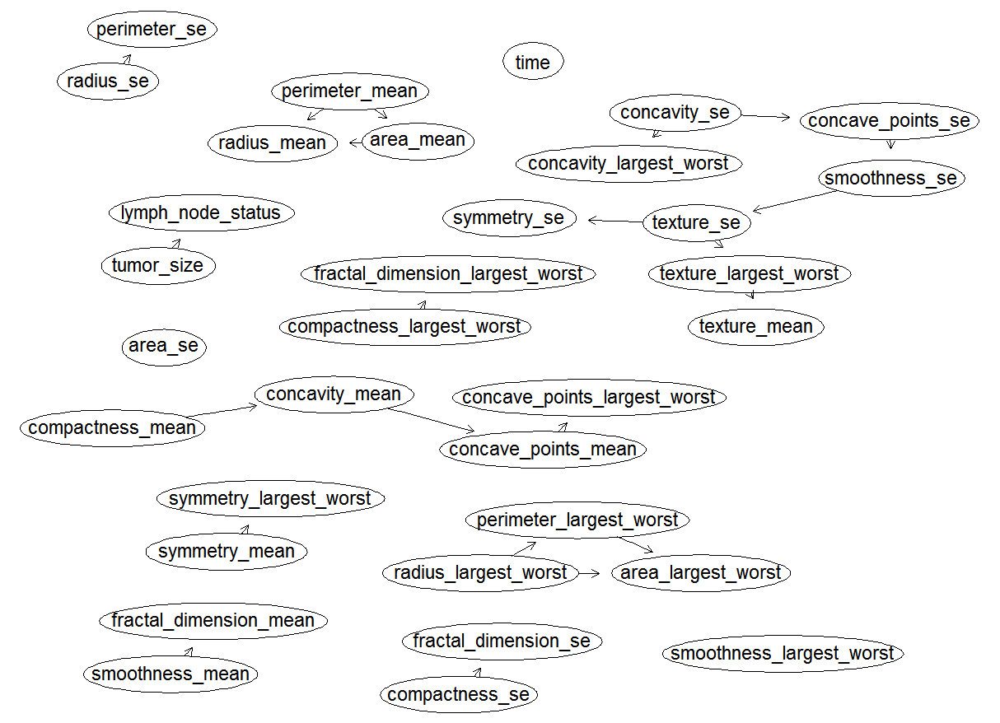Step #1: Learn The Structure
Wisconsin Diagnostic Dataset
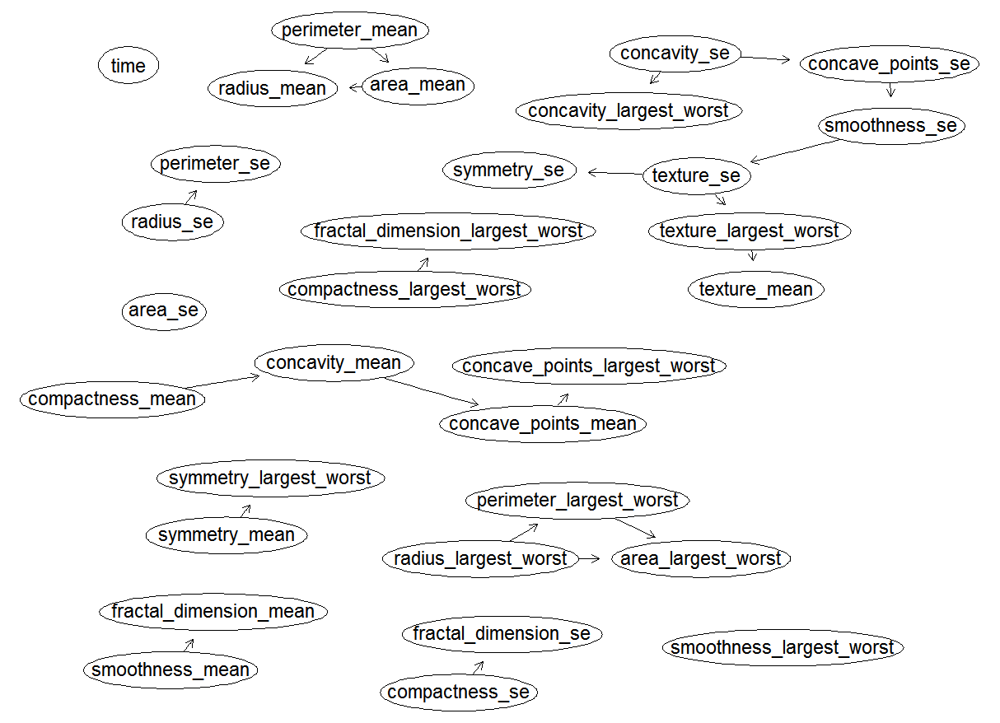Step #1: Learn The Structure
*Wisonsin Original Dataset*
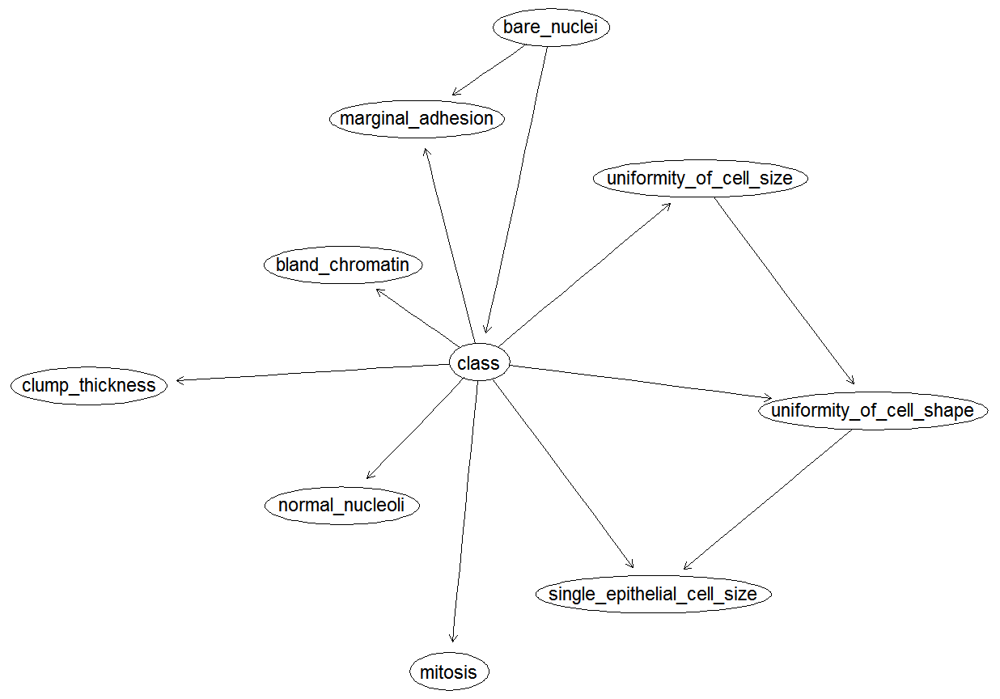Step #1: Learn The Structure
*Ljubljana Recurrance Dataset*
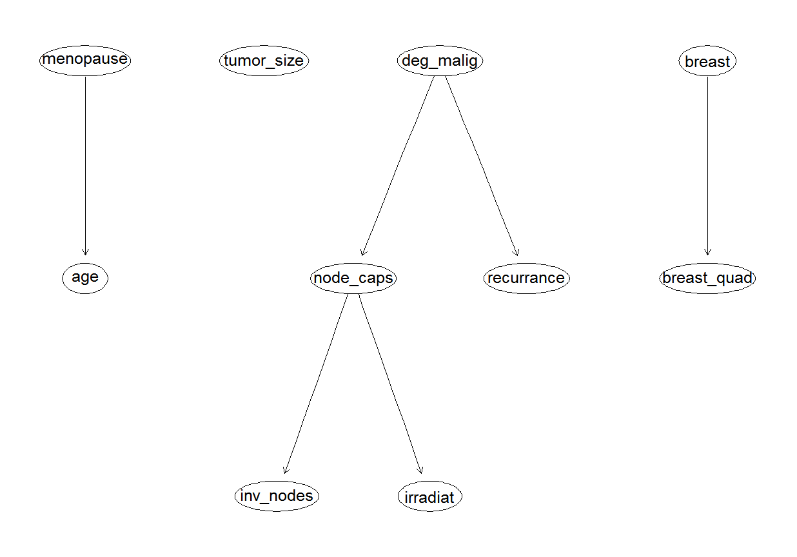Step #2: Estimate Conditional Probabilites
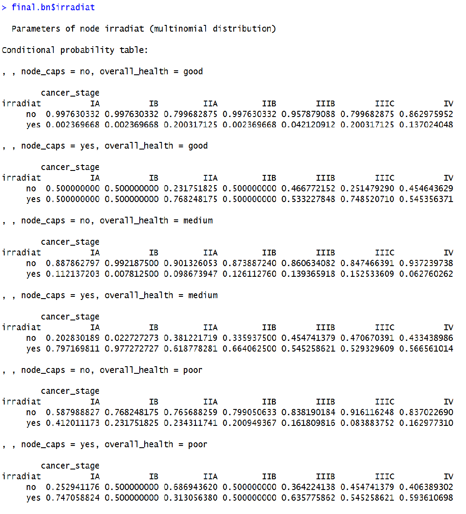Step #3: Ask Questions!
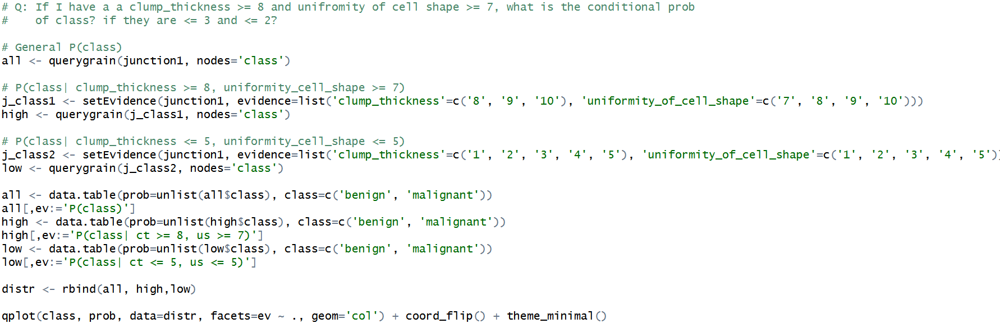Step #3: Ask Questions!
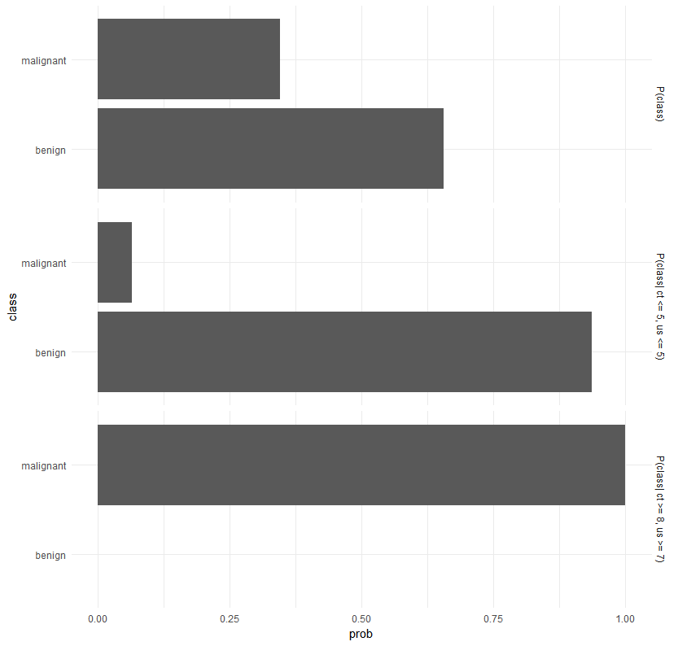Step #3: Ask Questions!
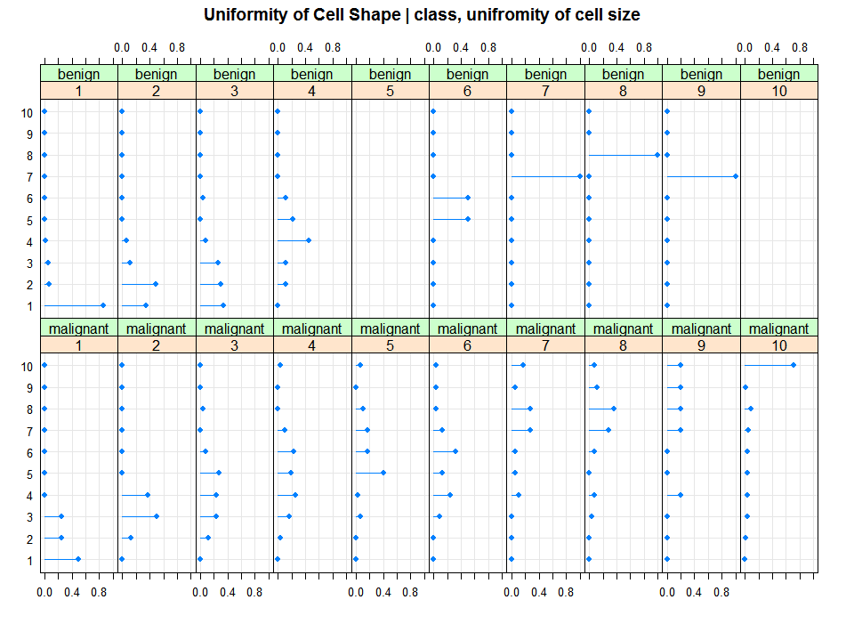Step #3: Ask Questions!
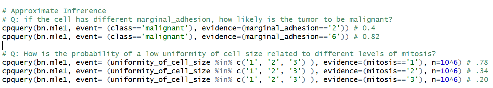Step #4: Create Full-size Network
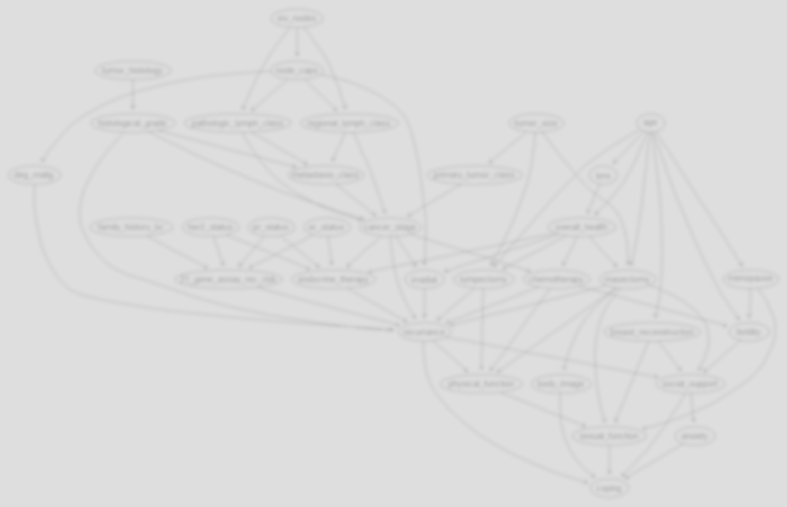Random data results in poor edge strength =(
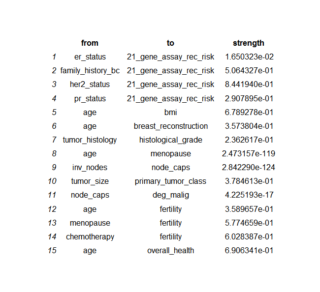Q: How does the probability of Radiation Therapy change for high stage, poor health individuals based on Lymph Node Capsule invasion?
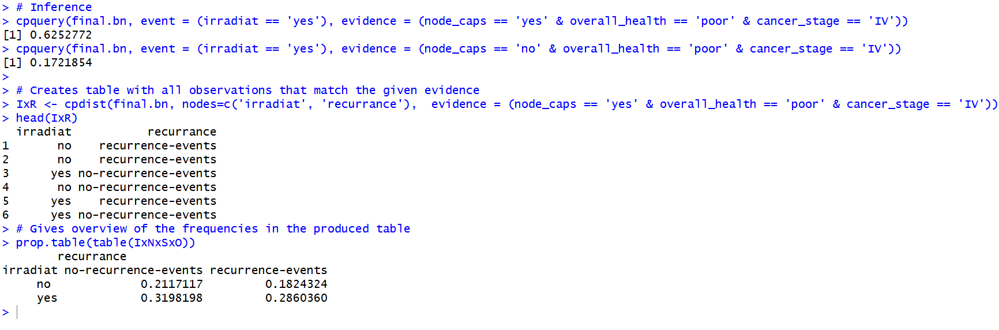Discussion
Conclusion
- Bayesnets rule, DLs drool